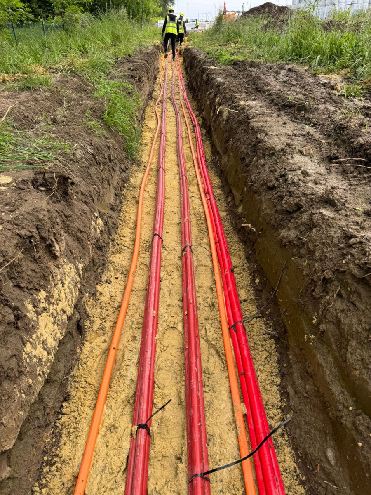

Energietransitie
Netuitbreiding op middenspanning: nieuwe 10/20 kV-kabelverbindingen tussen onder- en schakelstations, voor het aansluiten van duurzame opwek en het oplossen van netcongestie.
Van projectstart tot definitief ontwerp
Van de eerste projectschets tot een definitief ontwerp dat klaar is voor de aannemer. Met onze eigen procestool ontwerpen we middenspanningsverbindingen en transportleidingen voor de energie- en watertransitie sneller, zonder in te leveren op vakmanschap.
Na ruim een jaar voorbereiding bundelen vier ervaren zelfstandigen hun kennis in VECTOR Engineering. Samen hebben we ruim 75 jaar ervaring in de ondergrondse infra voor energie en water, bij netbeheerders, waterbedrijven, aannemers en ingenieursbureaus. Daarnaast kunnen we terugvallen op een uitgebreid netwerk van specialisten in dit proces. Die ervaring combineren we met IT-kennis en onze eigen procestool. Zo ontwerpen we sneller en beter, van eerste schets tot definitief ontwerp.

Vakgebieden
Nieuwe middenspanningsverbindingen en transportleidingen lopen kilometers door het buitengebied en kruisen wegen, waterwegen, dijken en bestaande netten. Wij engineeren het hele tracé: van tracékeuze en diepteligging tot kruisingen, raakvlakken met bestaande infra en fasering naar uitvoering.

Netuitbreiding op middenspanning: nieuwe 10/20 kV-kabelverbindingen tussen onder- en schakelstations, voor het aansluiten van duurzame opwek en het oplossen van netcongestie.
Ondergrondse aanleg van transportleidingen voor drinkwater en industriewater, met de kruisingen en boringen die daarbij horen.
Diensten
Tracés voor middenspanningsverbindingen en transportleidingen, uitgewerkt van tracéstudie tot definitief ontwerp, met overdraagbare documentatie.
Tracéontwerpen, dwarsprofielen en projectinformatie sneller en beter, van eerste concept tot definitief ontwerp.
Een tracéontwerp hangt aan elkaar van afhankelijkheden. Wij maken die zichtbaar en richten het ontwerpproces daarop in.
 boring onder vaart
boring onder vaart
Grondzaken
Een tracé loopt over grond van anderen. Onze tools koppelen het ontwerp aan het kadaster, zodat per perceel duidelijk is welk recht nodig is, wat dat kost en hoe ver het dossier is.
Conditionerende onderzoeken
Onderzoeken bepalen of een tracé uitvoerbaar en vergunbaar is. We beginnen met bureaustudies op bestaande gegevens en zetten daarna gericht veldonderzoek uit, gelijk met het ontwerp, zodat de uitkomsten op tijd in het tracé landen.
Vooraf in kaart: bestaande gegevens, historische kaarten en archieven, bodem- en NGE-informatie, archeologische verwachtingen en beschermde gebieden. Zo weten we waar veldonderzoek nodig is en waar niet.
KLIC-melding en inventarisatie van bestaande netten langs het hele tracé.
Verkennend bodemonderzoek, PFAS en de afvoer of het hergebruik van grond.
Boringen en sonderingen, onder meer als basis voor gestuurde boringen.
Vooronderzoek NGE en waar nodig detectie voordat er gegraven wordt.
Bureauonderzoek en waar nodig booronderzoek, afgestemd met de gemeente.
Quickscan en waar nodig nader onderzoek en ontheffing.
AERIUS-berekening van de depositie tijdens aanleg en toets op beschermde gebieden.
Eisen en onderzoeken van waterschap, Rijkswaterstaat, ProRail en provincie.
Project- en risicomanagement
Een ontwerp is pas beheersbaar als iedereen dezelfde stand van zaken ziet. Ons dashboard volgt elke stap en houdt risico’s en kosten actueel.
Werkwijze
Scope, uitgangspunten en randvoorwaarden helder. We sluiten aan op de fase waarin je project zit.
Eerste tracévarianten en globale ligging, met kansen, knelpunten en een kostenindicatie.
Tracékeuze en hoofdopzet van kabels en leidingen, met de eerste raakvlakken met bestaande infra.
Profielen, dieptes en kruisingen liggen vast. Raakvlakken en eisen zijn getoetst: het ontwerp is vergunningsgereed.
Ons werk eindigt bij het DO. De aannemer verzorgt het uitvoeringsontwerp en de realisatie.
Tussen elke fase stemmen we voortgang, status en keuzes af met opdrachtgever en stakeholders. De volgende fase start pas na akkoord.
Tijdwinst
Onze ervaren engineers besteden hun tijd aan beoordelen, kiezen en afstemmen. Uitzoekwerk, tekenwerk en berekeningen versnelt de procestool. Een klein kernteam met specialisten op afroep betekent geen wachten op capaciteit en weinig overdrachten.
Kaarten, knelpunten en varianten liggen in de eerste weken al op tafel, en onderzoeken en vergunningen lopen vanaf het begin mee. Het ontwerp staat daardoor al in SO en VO, en in het DO hoeft er weinig terug.
Samenwerken
Bespreek je engineeringvraagstuk of tracé met ons.
Neem contact opVeiligheid
Een graafschade aan een middenspanningskabel of transportleiding raakt mensen, netten en omgeving. Daarom is veiligheid bij ons geen eindcontrole, maar het uitgangspunt van elke ontwerpstap.
Alle bestaande kabels en leidingen zijn vanaf het begin in beeld. Onbekende netten benoemen we als risico, voordat er gegraven wordt.
Afstanden tot bestaande infra, leggingsdiepte en kruisingen toetsen we aan de geldende normen. Onze procestool controleert extra.
Veiligheid heeft een eigen score in het risicoregister, met oorzaak, gevolg en maatregel. Zo is zichtbaar wat er speelt en wie het oppakt.
Sneller ontwerpen, zonder concessies aan veiligheid.
Contact
Stuur een bericht. We reageren snel en denken concreet mee, van tracéstudie tot definitief ontwerp.